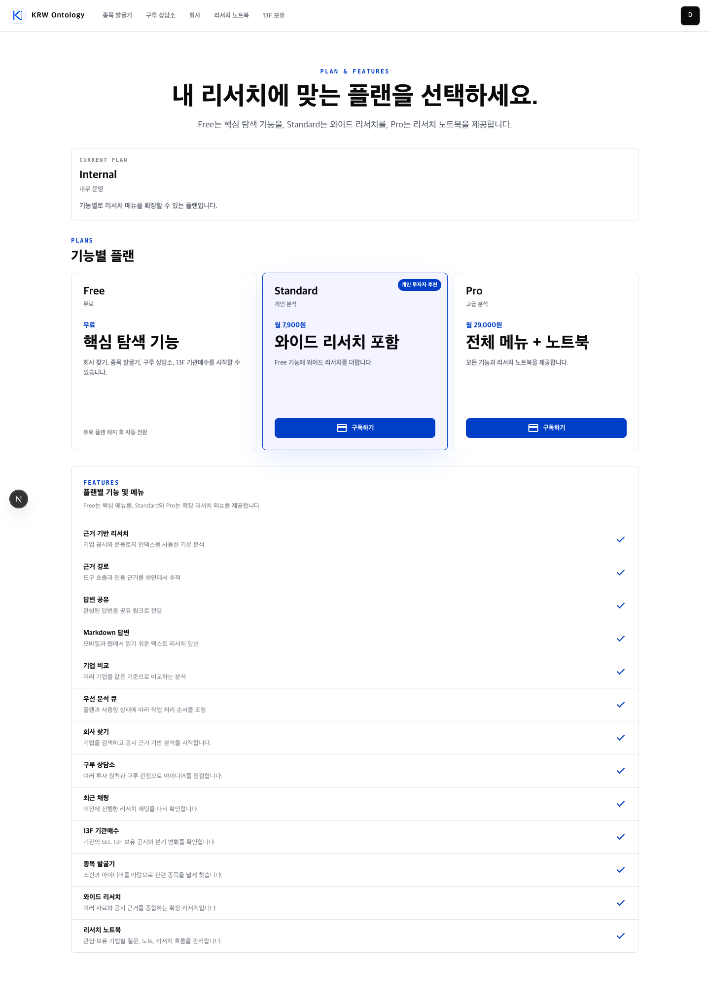
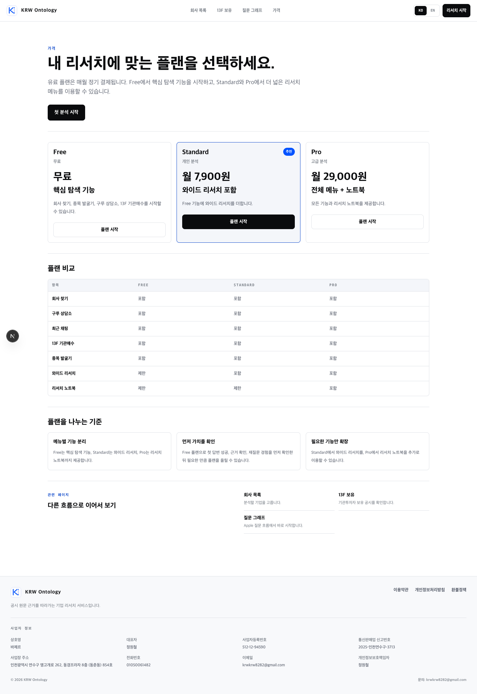
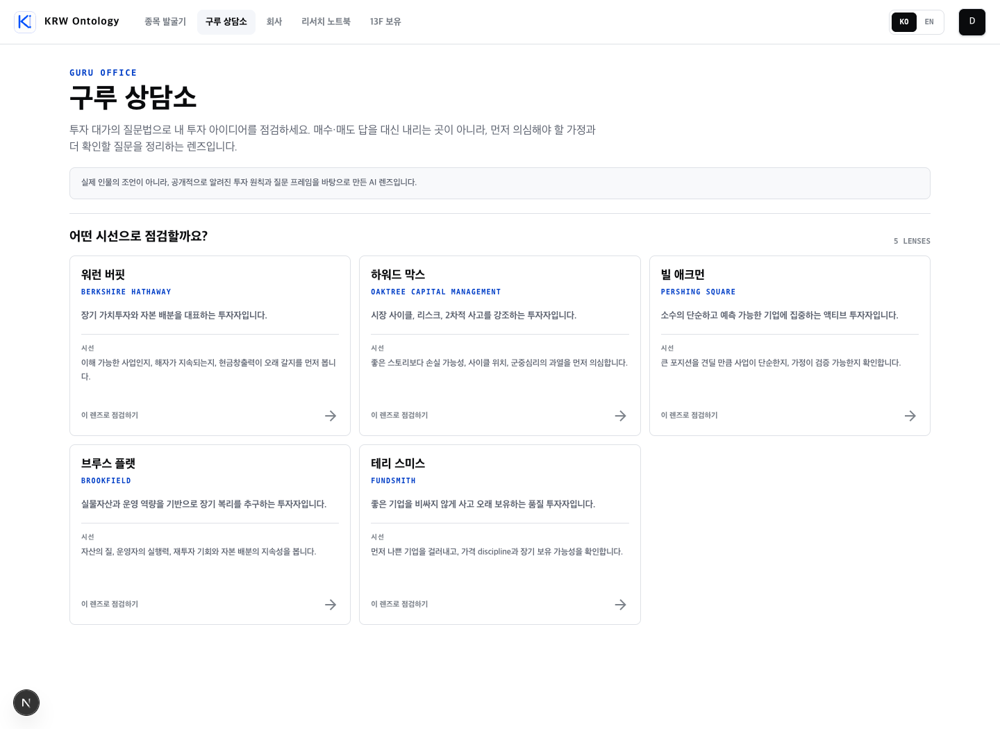

결론
- P0: 결제 플랜의 개인 투자자 추천 배지는 삭제하세요. 가장 직접적으로 “투자자를 위한 추천 상품”처럼 보입니다.
- P0: 공개 가격과 결제 화면의 추천 배지도 삭제하거나 와이드 리서치 포함처럼 기능 설명으로 바꾸세요.
- P0: 13F 기관매수는 13F 기관 보유 또는 기관 보유 변화로 바꾸세요. “매수”는 신호·추천 연상을 만듭니다.
- P1: 종목 발굴기, 구루 상담소는 조건으로 기업 검색, 관점별 분석처럼 과업·자료 중심 이름으로 바꾸는 편이 낫습니다.
- 유지: “투자자문이 아니며 매수·매도 결론을 대신하지 않는다”는 현재의 방어 문구는 유지하되, 결제 화면에도 짧게 노출하세요.
현재 화면에서 보이는 조합




우선 수정할 카피
| 우선순위 | 현재 표현 | 권장 표현 | 판단 |
|---|---|---|---|
| P0 | 개인 투자자 추천 | 삭제 대안: 와이드 리서치 포함 | 플랜을 투자자에게 권하는 문구로 읽히고, 바로 옆 기능명과 결합됩니다. |
| P0 | 추천 | 삭제 대안: 확장 리서치 | 가격 화면에서는 “상품 추천”과 “투자 추천”이 가까이 보이지 않게 하는 것이 보수적입니다. |
| P0 | 13F 기관매수 | 13F 기관 보유 기관 보유 변화 | 13F는 과거 보유 공시인데 “매수”는 현재 매수 신호처럼 오해될 수 있습니다. |
| P1 | 종목 발굴기 종목 발굴 시작 | 조건으로 기업 검색 기업 탐색 시작 | “발굴”은 후보 종목을 추천·제공하는 느낌이 있어 검색·자료 확인 중심으로 낮춥니다. |
| P1 | 구루 상담소 구루 상담 시작 | 관점별 분석 분석 관점 선택 | “상담소”와 “구루”는 유료 개인 상담·전문가 조언의 인상을 만들 수 있습니다. |
| P1 | 전량 매도 집중 매수 리스트 | 보유 종료 보유 비중 증가 | 기관 공시의 관찰 사실은 남기되, 행동 신호처럼 보이는 동사를 줄입니다. |
| P1 | “지금 살까?” | “어떤 조건에서 판단을 바꿀까?” | 온보딩 예시에서 매수 행동 자체를 호출하지 않고 가정 점검 목적을 유지합니다. |
카드사 심사용 권장안
공개 가격 화면
Standard · 월 7,900원 확장 리서치 Free 기능에 와이드 리서치를 더합니다. 서비스는 기업 공시와 시장 자료를 확인하는 리서치 소프트웨어입니다. 투자자문이나 매수·매도 추천을 제공하지 않으며, 투자 판단은 이용자에게 있습니다.
결제 플랜 화면
Free 회사 검색, 공시 기반 분석, 기관 보유 공시 확인을 시작할 수 있습니다. Standard 와이드 리서치 포함 Free 기능에 와이드 리서치를 더합니다.
추천하는 절충안: Standard 카드의 시각적 강조는 유지해도 됩니다. 다만 “추천”이라는 배지 대신 플랜의 기능 차이만 강조하고, 모든 플랜 카드의 설명·비교표·내비게이션에서 같은 용어를 사용하세요.
왜 이 정도로 보수적으로 보나
금융위원회는 유사투자자문업자가 불특정 다수에게 개별성 없는 조언만 제공할 수 있고, 온라인 양방향 채널을 통한 유료 회원제 영업은 투자자문업자의 영역으로 규율된다고 설명합니다. 또한 금융회사로 오인시키는 광고, 허위·미실현 수익률, 불확실한 사항을 확실한 것처럼 보이게 하는 광고를 금지 대상으로 안내합니다.
따라서 현재 서비스가 실제로 투자자문업에 해당한다고 단정하는 것이 아니라, 카드사·PG가 짧은 화면만 보고 상품을 분류할 때 “투자 조언/신호를 유료로 제공하는 서비스”로 오해할 수 있는 단서를 줄이는 것이 목적입니다.
- 금융위원회: 2024년 자본시장법 시행 관련 유사투자자문업 영업규제 안내
- 금융위원회: 종목 추천·고수익 보장 리딩방 유의사항
- 신한카드 가맹점 약관: 금융투자상품은 카드 결제 대상에서 제외된다는 조항
주의: 위 자료만으로 카드사 승인 여부나 자본시장법상 업종 해당 여부를 확정할 수는 없습니다. 최종 제출 전 PG/카드사에 실제 상품 설명, 사업자 업종, 결제 플랜 페이지를 함께 전달해 확인받는 것이 필요합니다.
제출 전 체크리스트
- 결제 URL, 공개 가격 URL, 홈, 13F, 구루 화면의 상품 설명을 같은 언어로 맞춥니다.
- 결제 화면에서 개인 투자자 추천, 추천, 기관매수를 우선 제거합니다.
- “종목 발굴기”와 “구루 상담소”를 기능 설명 중심 명칭으로 바꾸고, 영문 카피도 함께 수정합니다.
- 매수·매도·수익률·목표가·신호·보장 표현이 결제 CTA 근처에 없는지 다시 검색합니다.
- 서비스 설명에는 “공시 기반 리서치 소프트웨어”, “투자자문·매수·매도 추천 아님”, “판단은 이용자”를 짧게 포함합니다.
- 실제 카드사/PG 제출 자료에는 서비스가 제공하는 결과물, 환불·해지 조건, 고객지원 연락처를 함께 첨부합니다.